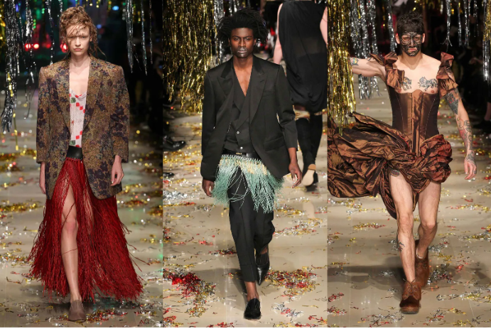

Vivienne Westwood
An unconventional, provocative, and progressive fashion designer -- a true Dame.
audience after presenting the Vivienne Westwood fashion collection from the men's Spring/Summer 2013 collection,
part of the Milan Fashion Week, unveiled in Milan, June 24, 2012.
Here's a time line of Vivienne Westwood's life and works:
- 1941 - Born in Derbyshire, England
- 1971 - When Westwood met Malcolm McLaren, the manager of seminal punk band Sex Pistols, they opened a boutique in London’s Chelsea in 1971 with the name 430 Kings Road.
- 1974 - The 430 Kings Road store changed its name to coincide with her collection releases, from Let It Rock and Too Fast To Live, Too Young To Die, to most famously, Sex in 1974.
- 1977 - just as Sex Pistols’s “God Save The Queen” went to number one on the NME chart, the shop was renamed Seditionaries, to reflect a new aesthetic and attitude igniting an entire movement, which became known as punk rock.
- 1981 - Westwood and McLaren debuted their looks on the runway in London, where their collection, Pirates, was acclaimed for its liberation from the constricting silhouettes of the ’70s. When her work with McLaren came to an end, however, Westwood continued to dominate the fashion world.
- 1985 - Westwood became known for taking cues from historical dress. Instead of exploring the masculine shoulders that were rife in the ’80s, she subverted conservative 17th-century dress into sensuously fitted garments that drew attention to curves.
- 1987-1922 - A major shift from championing punk rockers to parodying the upper classes became apparent during the late ’80s, which Westwood referred to as “the Pagan years”. Her influential Harris Tweed collection of autumn/winter 1987 took inspiration from a little girl she saw on the train one day.
- 1993-1999 - In the ’90s Westwood changed her aesthetic again, merging historical references while playing with modern proportion and precision-cut tailoring.
-

- 2000-PRESENT: ACTIVISM AND ANDROGYNY
- Early 2000's - Westwood began to use her collections and runway shows as a political platform in the Noughties, especially when it came to her chief causes: environmentalism and saving the planet.
- 2015 - Her collection for autumn/winter 2015, "Unisex", was arguably one of the first to showcase androgynous looks to the mainstream, paving the way, once again, for a new era of progressive and inclusive fashion.
- 2022 - Dame Vivienne Westwood’s death at the age of 81 was announced by her team on 29 December 2022. “Vivienne continued to do the things she loved up until the last moment, designing, working on her art, writing her book, and changing the world for the better,” an official statement said. “She led an amazing life.”
"My aim is to make the poor look rich and the rich look poor."
-- Vivienne Westwood